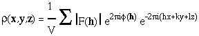
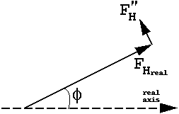
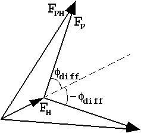

|
Basic Maths for Protein Crystallographers |
| Phasing |
|
|
An X-ray experiment allows us to measure all I(h) to some resolution
limit. If we knew both |F(h)| and
 (h)
then we could generate a map of the unit cell having peaks at and only at each atom position using
the Fourier summation
(h)
then we could generate a map of the unit cell having peaks at and only at each atom position using
the Fourier summation

This (the presence of peaks) is the fundamental property of crystal diffraction which underpins all structure solution methods.
But the phases cannot be measured directly and have to be inferred from differences between sets of intensity measurements. The experimental techniques to find them are loosely labelled as MIR, MIRAS, SIR, SIRAS, MAD, SAD:
We need to consider the structure factor equation in more detail before discussing these.
In fact the scattering factor f(i,S) is:
f(i,S) + f'(i) + i f"(i)
where f' and f" describe the scattering from inner electron shells, which varies as a function of
the wavelength, but is more or less constant at all
resolutions (i.e. f"(i,S) = f"(i)).
For many elements ( C, N, O in particular) f' and f" are very small at all
accessible wavelengths. Others, such as S and Cl have a small but detectable component at
CuK (f" ~ 0.5).
In general transition elements such as Se, Br have observable f" (f" ~ 3-4)
at short wavelengths. Metals and other heavy elements such as Hg, Pt, I etc. have quite
large f" and f' contributions at most accessible wavelengths (at
CuK
(f" ~ 0.5).
In general transition elements such as Se, Br have observable f" (f" ~ 3-4)
at short wavelengths. Metals and other heavy elements such as Hg, Pt, I etc. have quite
large f" and f' contributions at most accessible wavelengths (at
CuK f"Hg
~ 8).
f"Hg
~ 8).
It helps to re-write the FH(h) or FA(h) component like this:
 |
 |
The anomalous contribution is always 90 degrees in ADVANCE of the real contribution. The ratio of all |F"H|/ |FH| = f"(j,h)/{f(j,h) -f'(j,h)}.
Now
 |
which means that, although the magnitudes of FH(h) and FH(-h) are equal, their phases are different, and FH(-h) is no longer the complex conjugate of FH(h).
And since FPH(h) = FH(h) + FP(h),
and FPH(-h) = FH(-h) + FP(-h)
it follows that neither the magnitudes of |FPH(h)| and |FPH(-h)| are
equal,
nor the phase  PH(h)
equal to -
PH(h)
equal to - PH(-h).
PH(-h).
Answer: In no way unless we can position the heavy (or anomalous) atoms.
If they are known, the vector FH(h) can be calculated and from the knowledge
of the three magnitudes |FH(h)|, |FP(h)| and
|FPH(h)| plus the phase of FH(h), it is
easy to show from a phase triangle that
 P will have
to equal
P will have
to equal  H±
H± diff.
diff.
| This is often represented with "phase circles" (or phasing diagrams) or "phase triangles": |  |
Since there are usually only a few heavy atoms associated with many protein atoms, they can usually be positioned using Pattersons or direct methods. Both these techniques require only an estimate of the magnitude of the FH(h).
It maybe is worth summarising here the theory behind difference Pattersons.
FPH(h) = FH(h) + FP(h).
The cos rule gives:
|FPH(h)|² =
|FH(h)|² + |FP(h)|² +
2 |FH(h)| |FP(h)|
cos diff
diff
where  diff is the phase between
vector FH(h) and vector FP(h).
From this we can approximate:
diff is the phase between
vector FH(h) and vector FP(h).
From this we can approximate:
|FPH(h)| = {|FH(h|² + |FP(h)|² + 2 |FH(h)| |FP(h)| cosdiff}½ =
|FP(h)| {1 + 2 |FH(h)|/ |FP(h)| cos
The binomial theorem gives (1+x)½ ~ 1 + x/2 when x is small, so
|FPH(h)| ~ |FP(h)| {1 + |FH(h)|/ |FP(h)| cos
= |FP(h)| + |FH(h)| cos
So |FPH(h)| - |FP(h)| ~
|FH(h)| cos diff +
an even smaller term, providing |FH(h)| is small compared to
|FP(h)|.
diff +
an even smaller term, providing |FH(h)| is small compared to
|FP(h)|.
and a Patterson with coefficients
(|FPH(h)| - |FP(h)|)² is approximately equivalent to one
with coefficients (|FH(h)|
cos diff)² =
½|FH(h)|²
(1 + cos 2
diff)² =
½|FH(h)|²
(1 + cos 2 diff)
(remember: cos²(x) = (1+cos(2x))/2)
diff)
(remember: cos²(x) = (1+cos(2x))/2)
The summation of ½|FH(h)|²
will give the normal Patterson distribution of vectors between related atoms
while the summation of ½|FH(h)|²
cos 2 diff will generate only noise.
diff will generate only noise.
Similar equations explain why a Fourier summation gives full weight peaks at the atomic positions which have been included in the phasing, and peaks at about half the expected height for atoms excluded from the phasing. Say FPH(h) = FP(h) + FH(h) where FH is much smaller than FP; i.e. only a few atoms are excluded from the phasing. Then as above
|FPH| ~ |FP| + |FH| cos(
The Fourier summation
|FPH| ei
Since cos(x) = (eix + e -ix)/2
cos(
and the second term becomes
giving the Fourier map for the atoms contributing to FH at half weight, plus noise, since
the phase 2 P-
P- H is not related
to these atoms at all.
H is not related
to these atoms at all.